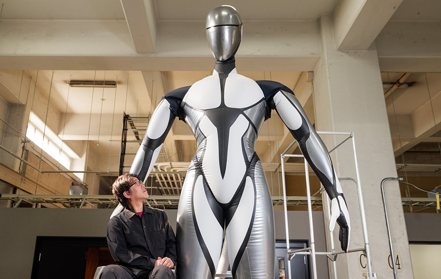
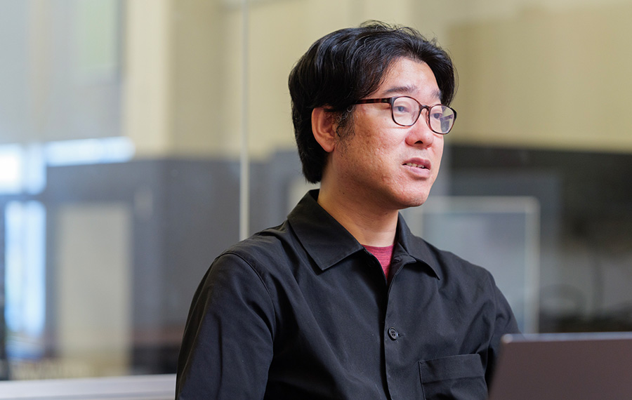
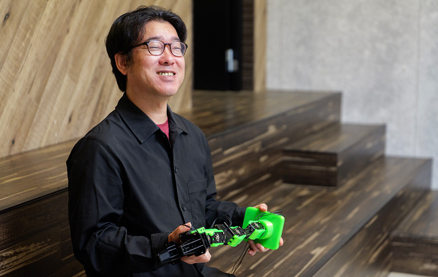
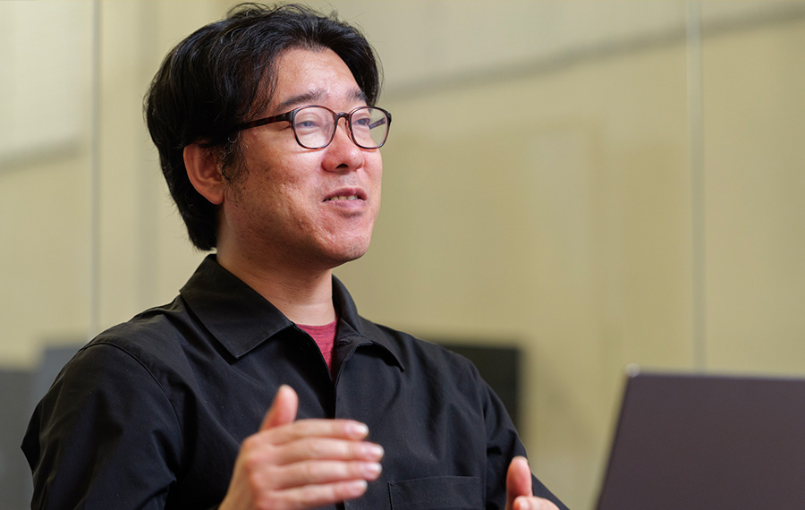

「身体を動かす知能」への挑戦
－私たちは今、「あの頃が転換点だった」という時代を生きている

吉崎 航
アスラテック株式会社 取締役 / チーフロボットクリエイター
ロボット制御システム「V-Sido」開発者。2009年にIPA（独立行政法人情報処理推進機構）が実施した「未踏IT人材発掘・育成事業」に採択され、スーパークリエータに認定される。水道橋重工の巨大ロボット「クラタス」など、数多くのロボット制御に携わったのち、2013年にアスラテック株式会社の立ち上げに参画する。政府のロボット革命実現会議や、一般社団法人ガンダムGLOBAL CHALLENGE システムディレクターなど、ロボットにかかわる様々な取り組みに名を連ねてきた。
── ロボットの専門家になるまでの経緯を教えてください。
小学生の頃からはんだごてを握り、中学生でプログラミングをやっていました。転機になったのが中学の自由研究です。「巨大ロボットは本当に作れるか」というテーマで、油圧の出力や必要な速度を計算した上で、「大きさが8m以下程度であれば、問題は力でも構造でもなく、ソフトウェアである」という結論に至りました。ロボットを動かすにはこれからソフトウェアが鍵になり、そのうちAIになるだろう、と。そこで、ロボコンで当時日本一になっていた徳山高専の（あえて機械電気工学科ではなく）情報電子工学科に入学し、ソフトウェアでロボコンに挑みました。その頃から人工知能をやりたいという気持ちが強く、高専の最終論文も「多段化された人工知能でロボットを制御する」というテーマでした。 ただ、大学に編入する頃はAIでは冬の時代ともいわれる時期でした。入学したかった大学の先生から「今AIはやめておいたほうがいい」と諭されたほどです。そのような中でも画像処理のAIに的を絞って千葉大学で学んだ後、奈良先端大のロボット研究室に進みました。学生の身でしたが産総研でも研究をさせていただき、やりたいことに打ち込んでいた頃、未踏に採択されました。その後、アスラテックを立ち上げて一貫してロボットに関する開発に携わっています。
── その吉崎さんから見て、今のロボットはどう見えていますか
人型ロボットがダンスをして、人間に近い動きやアクロバティックな動きをするというのは、作業を代替してくれるロボットとしては最適解ではない可能性が高い。 人間と共に働くロボットが5本指で二足歩行である必要が本当にあるのか、ダンスをする必要があるのか。一生を海の中で過ごすかもしれないロボットに、宇宙で動くためのシステムは要らない。ダンスも必要ない。人はかなり多様なフィールドで活躍できますが、人もロボットも寿命が有限であることをふまえると、求められる多様さにも限度があります。それなのに、「そのうち人型から離れるだろう」と言われ続けてきたにもかかわらず、世の中で最新・最高と話題になるロボットはいつも人型で、令和でも踊り続けています。
── なぜ、人型ロボットが最先端の象徴であり続けるのでしょうか。
まず、見る側が喜ぶからだと思います。定期的に企業が人型ロボットを発表するのは、「最新のロボット開発にコミットしていますよ」という主張のためでもあります。真面目にやっている会社は二足歩行ロボットを作るにしても構造を人からことなるものにしたり、同時に車輪型ロボットを作ったりしています。そうやって作業ロボットとしての最適解を探しつつも、「我々が最先端だ」と示すために人型ロボットが必要なのです。一般の人は人型ロボットの方しか見ていません。ブームが新たな技術開発や予算の呼び水になることを考えると、これは必ずしも悪いことではありません。
── そもそもロボットはどういう段階で進化を遂げてきたのですか
筑波万博の頃、WABOTシリーズの開発で知られる早稲田大学から、世界的に見てもヒューマノイドの最初と言われる人型ロボットが登場しました。骨組みにモーターを取り付けて歩けることを示し、全身のロボットが作れるということを広く知らしめたのです。次の転換点は世界初の自律二足歩行ロボットであるHondaのP2です。必要なものをしっかり研究したうえで不要なものを削ぎ落とし、全身をマグネシウム合金にして外装自体に強度を持たせて作り上げた。しかも学会では一切発表せずに絶好のタイミングでお披露目したのです。「お金をかけてセンスよくやればここまでできるのか」と、多くの研究者が感じたはずです。これによっていろんなところに予算がつくようになりました。2005年頃には、シリコン製の皮膚を持ち、人間そっくりの外見と動作を再現したActroid（アクトロイド）をはじめ、歩けるロボット、絵が描けるロボット、警備ロボット、踊れるロボットなどがどんどん登場しました。しかし商用として定着するには至らないまま、一旦ブームは収束していきます。

そうした中、新たなアプローチを持ち込んだのがBoston Dynamicsです。油圧を使って一気に力を出すことで、ジャンプができる、外で動けるロボットを世に送り出しました。それまではハーモニックドライブと呼ばれる日本の産業用ロボット由来のアクチュエーターが主流でしたが、衝撃に弱く研究室の外に出すのが非常に難しかった。産業用ロボットとは異なる文脈の技術でそれを突破したのがBoston Dynamicsの功績です。ただ油圧には油漏れの問題もあり、その後、電動駆動へのシフトが進みました。今は、QDDと呼ばれる小型で量産しやすいアクチュエーターを使った機械学習的な手法が主流になりつつあります。中国勢が一気に参入し、二脚ロボットにもこの手法が広がっています。技術は確実に進化している。それでも、本当に役立つものへと抜け出せるかどうかは、まだ道半ばといえます。
── AIとロボットの「知能」という観点では、今はどういう時期だと思いますか

ロボットブームとAIブームはこれまでも何度かありましたが、今が一番面白いと思うのは、両者のブームが同じタイミングに来たのが初めてだということです。後から振り返っても重要な転換点になるのではないでしょうか。 ただ、LLMを使った会話の知能がどんどん進んでいる一方で、「身体を動かす知能」に関してはまだほとんど何もわかっていない、期待に応えられていないという気がします。身体性は非常に重要です。身体を使って外界とインタラクションを取っているからこそ、人間はそれっぽい知能を得ている。身体という器に合わせて知能が相互作用して生まれてくる。人間の形だから賢いと言いたいわけではありません。ゴジラならゴジラの身体に合った知能があるということです。その仕組みになりきれているかどうか、というのが私の問いです。

今は、よくできたロボットが、似たような構造と似たようなモーターを使いながら、ソフトウェアの違いによってダンスしたりキックしたりしている段階です。巨大ロボットは巨大ロボットなりに、タコ型ロボットはタコ型ロボットなりに学習すべきです。理論上はできる。ただ、まだ流行っていないだけです。今は、資源がGPUとQDDを使った人間サイズのロボット開発に集中していますが、やりきったら次の段階に進むのではないでしょうか。
── そのような中で、吉崎さんはロボットのどこに取り組んでいますか
一貫して取り組んできたのは、AIとモーターの中間にある課題です。どんなAIをどう階層化し、相互作用させて動かすのかの方法論は、世の中にまだ確立されていません。この課題は今、フィジカルAIという文脈のおかげで一気に注目されています。シミュレーション上ではうまく動いたロボットが実機ではうまくいかない、「頭の部分」はうまくいくが「身体の部分」がついてこないという声が多く出てきているのです
ロボットに「肘を20度まで曲げろ」と言ったら20度に曲がってほしいわけですが、実際にはそう簡単にはいきません。20m級のロボットなら指だけで2mあるかもしれない。そこに風が吹きつけていたら腕ごとブレますし、そのブレ方もモーターによって違う。私は、そういう誰も考えたくない「泥臭くて面倒なところ」をやっています。つまり、モーターをうまく動かす部分だけをパッケージ化して、AIが多少無茶な指示を出してもロボットが壊れないように制御する。パソコンで言えばデバイスドライバやOSに近い部分です。巨大ロボットでも、人が乗れるロボットでも、歩行ロボットでも、全部この考え方の延長線上にあります。
ずっと取り組んできた課題が、今まさに多くの人が直面している課題と重なっている手応えがあります。今は、共同開発や受託開発という形式で、「実際に動くものを開発して販売したい」というご相談を受けています。「泥臭くて面倒なところ」のノウハウをV-Sido（ブシドー）としてライセンス提供しつつ、使いこなすために必要な部分は相手に合わせて作るというスタンスです。
── 今後、どうなっていくと面白いと思いますか
ロボットが大好きで、ロボットに囲まれて生活したいという想いが私の原点です。そのためには、ロボットの「居場所」が大切です。車の例でいうと、自動車の進化だけでなく、道路交通法や自動車保険のようなインフラ全体が整っているからこそ車社会が成立しているのです。ロボットにも同じことが言えます。居場所があれば、面白いものがどんどん生まれてくるはずです。日本政府の「ロボット新戦略」に関与するなど、ロボットそのものを作ること以外でも働きかけを続けているのはそのためです。
そして、もっともっと「タガの外れたロボット」が出てくると面白いですね。今のロボットの多くは「できる」とわかったものをやっているように見えます。私は「高さ8mの巨大蜘蛛型ロボットを作るとしたら」「人が4人乗れるロボットをつくるとしたら」といったことを考えています。今のロボットで何ができるかを熟知した上で、オリジナルのロボットで何ができるかを考えたい。未来から今の時代を振り返ったときに、私たちはきっと「あの頃が転換点だったな」という時代を生きているのですから。
企画・取材・編集 清水隆史